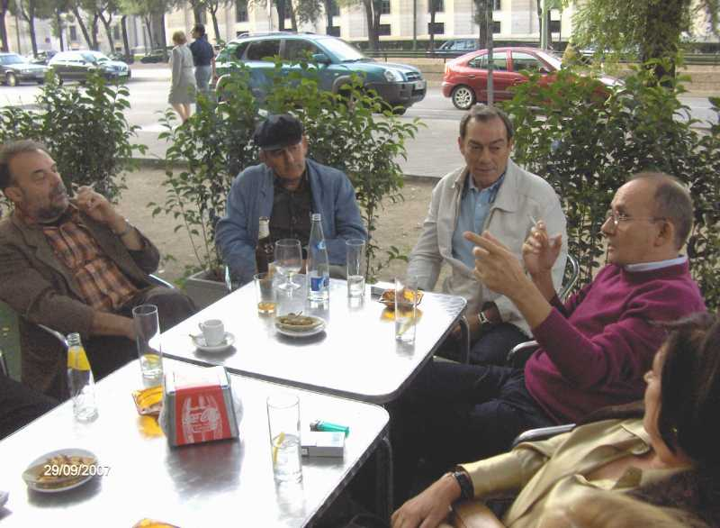

Con motivo del viaje a Madrid de Santiago Álava, como siempre -¡¡qué le vamos a hacer!!- en la capital del Reino, se reunieron los antiguos compañeros y más que formaron el siguiente reportaje. De izquierda a derecha Antonio Serrano Baena, Pedro Eugenio Martínez Castro, Santiago Álava Hidalgo, Chomín (José) Cunchillos y Paloma, esposa de Bajo Talavera.
(Pinchar en cada foto para ver la siguiente)
 |